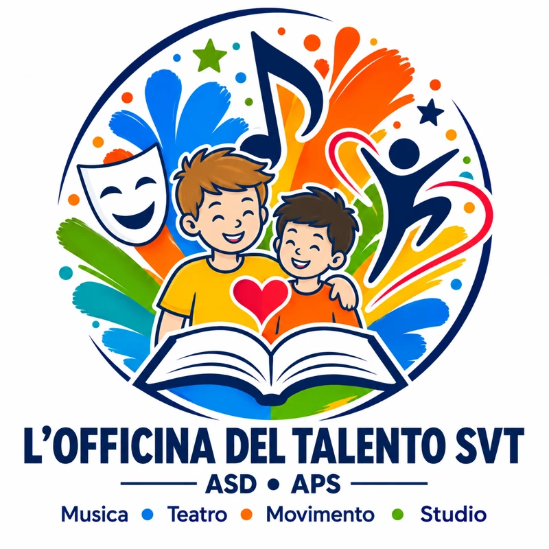

Studio
Supporto nei compiti e occasioni per sviluppare autonomia e fiducia.

A San Valentino Torio, un progetto per accompagnare i bambini con studio assistito, musica, teatro e movimento, affiancando le famiglie in uno spazio accogliente.
San Valentino Torio · Bambini di 6–11 anni
Apertura prevista: agosto–settembre 2027. Sede in corso di definizione.
Sfondo: rappresentazione illustrativa del progetto. La sede è in corso di definizione.
Vogliamo creare un ambiente accogliente dove ascolto, rispetto, inclusione, creatività e collaborazione accompagnino la crescita.
Supporto nei compiti e occasioni per sviluppare autonomia e fiducia.
Ascoltare, sperimentare e dare spazio all’espressione personale.
Immaginare, comunicare e imparare a collaborare.
Gioco, attività motoria e relazioni positive.
Stiamo preparando spazi, staff e risorse per dare continuità al progetto. Qui trovi le informazioni già definite e i prossimi passi.
L’Officina del Talento SVT – ASD • APS è già costituita, dispone di codice fiscale e partita IVA ed è iscritta al Registro Unico Nazionale del Terzo Settore (RUNTS), nella sezione Associazioni di Promozione Sociale.
È affiliata a OPES – Organizzazione per l’Educazione allo Sport, ente di promozione sportiva riconosciuto dal CONI.
La struttura associativa, le responsabilità e l’organizzazione delle attività sono già definite.
L’apertura è prevista indicativamente tra agosto e settembre 2027. Confermeremo la data quando sede, staff e risorse saranno pronti.
La sede sarà a San Valentino Torio ed è ancora da definire. Le pre-prenotazioni ci aiuteranno a scegliere spazi e capienza adeguati. Presenteremo indirizzo e ambienti prima delle iscrizioni definitive.
Stiamo completando lo staff, selezionando persone con qualifiche, competenze ed esperienza adeguate al ruolo e al lavoro con i bambini. Presenteremo nomi e ruoli dopo la conferma degli incarichi.
È previsto un contributo mensile, ancora da definire in base ai costi effettivi. L’obiettivo è un percorso accessibile e conveniente rispetto alla frequenza separata delle attività.
Comunicheremo importo, attività comprese e modalità di pagamento prima dell’iscrizione definitiva. Il progetto sarà sostenuto dai contributi degli associati, compresi i promotori, e dalle donazioni liberali.
Ci aiuta a conoscere le famiglie interessate e organizzare spazi e attività. Trovi modalità e condizioni nel riquadro Famiglie e bambini.
Segui i nostri canali social per le novità oppure scrivici via WhatsApp o email per le tue domande.
Coltiviamo il talento, costruiamo il futuro.
Vuoi far partecipare il tuo bambino, sostenere il progetto o mettere a disposizione le tue competenze? Scegli il percorso che fa per te.
I moduli si compilano un passaggio alla volta, anche dal telefono e senza account. Puoi controllare i dati prima dell’invio.
Per le famiglie · bambini di 6–11 anni
Vorresti un pomeriggio di studio, musica, teatro e movimento per il tuo bambino?
Lascia i tuoi contatti: la segreteria ti ricontatterà con le informazioni per scegliere.
Affrettati! Pre-prenota per tuo figlio: i posti previsti sono limitati.
Pre-prenota per il tuo bambinoGratuita e senza impegno. Non è un’iscrizione, non garantisce il posto e non comporta pagamenti.
Conosci le nostre regole: leggi il regolamento per le famiglie.
Per persone e aziende
Una donazione liberale può aiutarci a preparare gli spazi, i materiali e le attività per i bambini.
Scopri a cosa servirà il tuo aiuto e come comunicarci il tuo interesse.
Scopri come contribuireIl contributo è volontario e di importo liberamente scelto.
Per chi vuole contribuire con le proprie competenze
Vuoi accompagnare la crescita dei bambini con le tue competenze e la tua esperienza?
Scopri come presentarti e inviarci il curriculum, indicando interessi e disponibilità.
Scopri come candidartiLe candidature saranno valutate in base alle esigenze dell’associazione.
Come trattiamo i dati: leggi l’informativa privacy generale. Ogni modulo contiene anche la propria informativa specifica.
Lo pubblichiamo per far conoscere le regole e l’organizzazione delle attività. Puoi leggerlo, fare domande e decidere liberamente, senza pressioni né obblighi.
La lettura non comporta iscrizione o accettazione. All’iscrizione definitiva sarà richiesta la sottoscrizione del modulo di presa visione e accettazione, insieme agli altri documenti previsti. Riceverai prima tutte le condizioni e le informative; i consensi facoltativi resteranno separati.
Regolamento approvato dal Consiglio direttivo con verbale n. CD-02 del 18/10/2026 · In vigore dal 19/10/2026.
Sostieni la nascita dell’Officina con una donazione libera, dell’importo che scegli tu.
Il tuo aiuto contribuirà a materiali didattici, strumenti per i laboratori e organizzazione delle attività.
Il progetto sta già ricevendo aiuti concreti: un pianoforte, una chitarra e una batteria sono stati messi a disposizione per essere donati ai futuri laboratori musicali.
Compila il modulo per lasciare i tuoi dati: la segreteria ti ricontatterà per concordare i prossimi passi. L’invio non comporta impegni né pagamenti.
Le erogazioni liberali possono beneficiare di agevolazioni fiscali, nei limiti e alle condizioni previsti dalla normativa. Verifica con il tuo commercialista come usufruirne.
Intestazione del conto
L'officina Del Talento Svt Asd Aps
Intesa Sanpaolo · BIC/SWIFT: BCITITMM
Causale: Erogazione liberale - Nome e cognome / ragione sociale.
La donazione è volontaria e di importo liberamente scelto. Per aiutarci ad associare il versamento ai tuoi dati e predisporre la ricevuta, compila il modulo donazioni oppure contatta la segreteria. Il versamento viene registrato dopo la verifica dell’accredito.
Vuoi contribuire alla crescita dei bambini? Invia il tuo curriculum, indicando competenze, interessi e disponibilità. Valuteremo i profili per possibili incarichi o collaborazioni, in base alle esigenze e alle risorse dell’associazione.
Potrai inoltre manifestare interesse per eventuali futuri progetti di Servizio Civile Universale. Se attivati, comunicheremo i bandi e le modalità ufficiali di candidatura.
Compila la scheda online e allega il tuo curriculum in PDF.
Non serve un account. Riceverai una conferma dell’invio; dati e CV saranno accessibili solo all’amministrazione e alla segreteria autorizzate.
Per informazioni: lofficinadeltalentosvt@gmail.com. La candidatura spontanea non garantisce un incarico o un’assunzione. Per eventuali progetti di Servizio Civile Universale restano valide le modalità e i bandi ufficiali.
Condividi questa pagina con chi crede nella crescita dei bambini. Se sei un’azienda, puoi conoscerci, scegliere liberamente di sostenerci e contribuire a creare nuove opportunità nella nostra comunità.
La Presidente
Marianna Adinolfi
lofficinadeltalentosvt@gmail.com
PEC: lofficinadeltalentosvt@pec.it
Scrivi su WhatsAppPuoi contattarci per informazioni oppure scegliere uno dei moduli presenti in questa pagina.